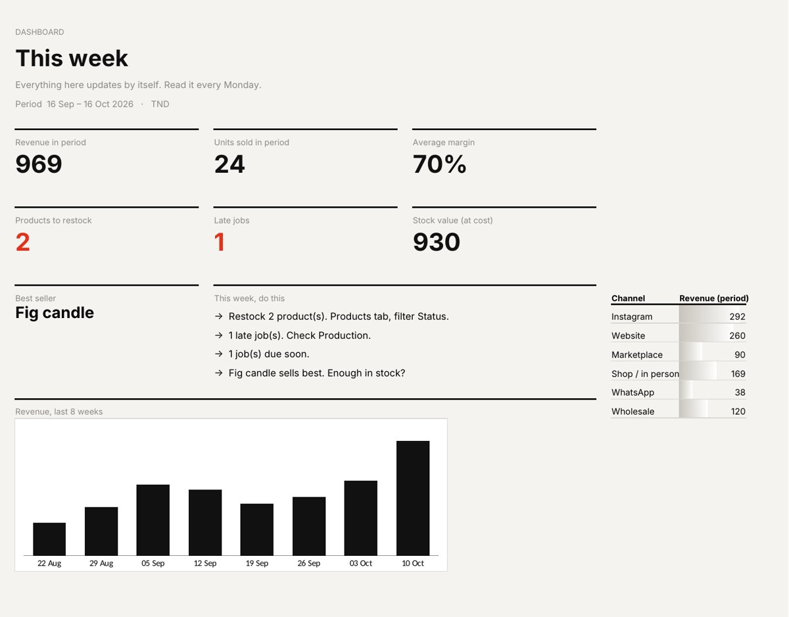

Use this free spreadsheet. Type your products, each sale and each batch you make. It calculates the real cost of every product including your time, shows what is in stock, flags what to restock and which jobs are late, and sums it all up on a weekly dashboard. It works in Excel and Google Sheets.

Materials plus your making time, at the hourly rate you set. Margin shown per product.
Stock updates from sales and finished jobs. Products at your restock level turn red.
Each job moves through your steps. Late and due-soon jobs are flagged.
Best seller of the period and revenue per channel: Instagram, website, marketplace, shop, WhatsApp, wholesale.
Revenue, units sold and an 8-week chart, for any period you choose.
A short to-do list on the dashboard, written from your numbers.
Add the cost of materials to the value of your making time. Example: 6 in materials plus 20 minutes of work at 15 an hour (5) gives a real cost of 11 per unit. The tracker does this for every product from your hourly rate.
Set a restock level per product: the stock that covers the time it takes you to make or reorder more. When stock reaches that level, the tracker marks the product Restock in red and counts it on the dashboard.
Yes. Upload the file to Google Drive and open it with Google Sheets. It only uses standard formulas, dropdown lists and colour rules that Google Sheets supports. Two details differ: the small bars inside cells show only in Excel, and the font may change to a standard one.
Yes. Download it, use it in your business and change it as you like. Please do not resell it.
Not this version: you type sales in, which takes seconds per sale. I build connected versions that pull orders from your shop, Instagram or WhatsApp and update stock on their own.
Anything you make or resell: candles, cosmetics, ceramics, clothing, food, prints, jewelry, furniture. For products you buy and resell, set making time to 0 and put the purchase price as the cost per unit.
I build connected versions: orders from your shop, Instagram or WhatsApp go straight into stock, and you get the weekly summary by email.